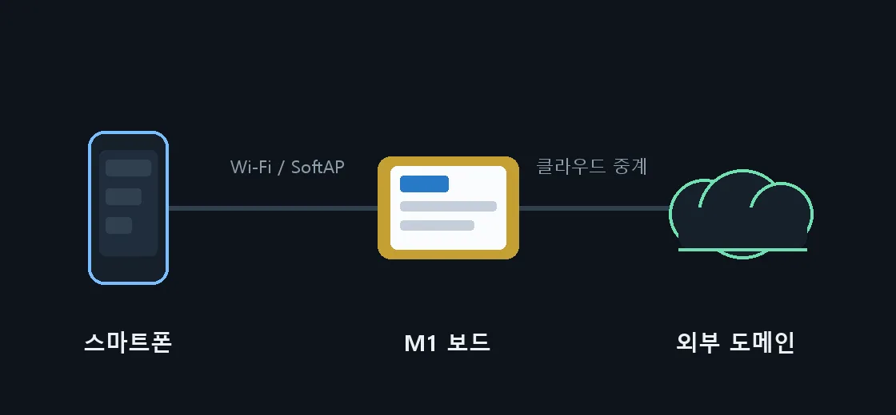

NETWORK
집 Wi-Fi, 직접 연결, 외부 주소까지
공유기에 연결해 같은 네트워크에서 쓰거나, 보드가 직접 SoftAP를 열어 공유기 없이도 접속할 수 있습니다. 클라우드 중계를 켜면 포트 개방 없이 외부 도메인으로 공개됩니다.
- Wi-Fi 검색과 비밀번호 입력을 화면 키보드로
- SoftAP 접속 시 설정 화면 자동 안내
- IPv6 지원과 클라우드 중계 외부 주소